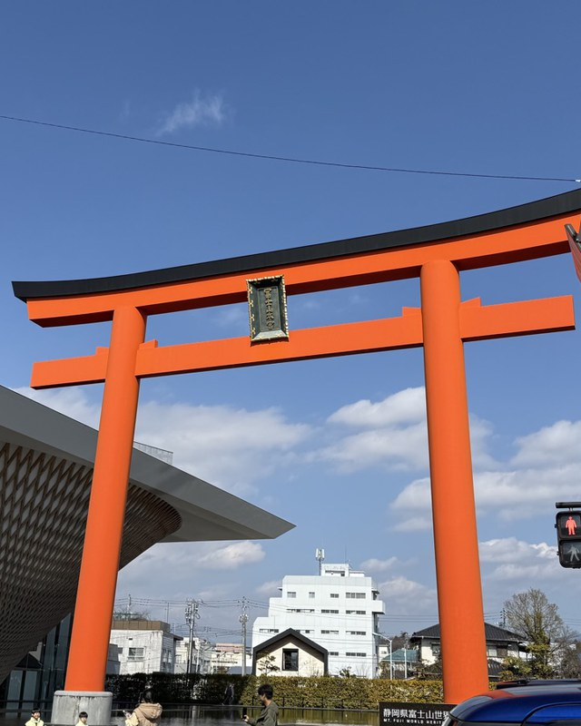
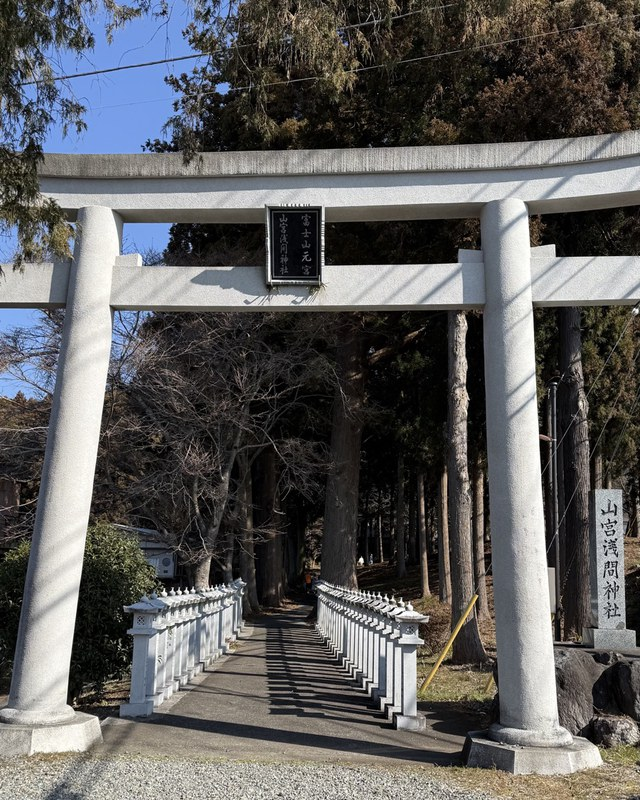
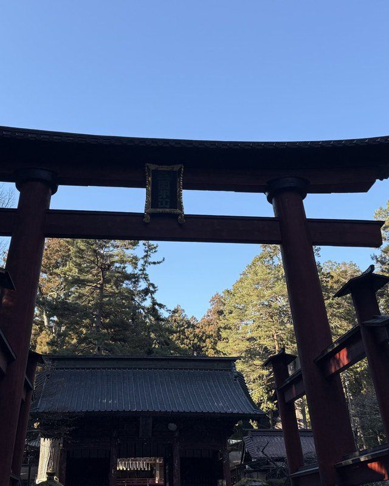

Shrines visited beyond Tokyo. They will move to their own regional pages in time.
Ise Jingu, which rebuilds its sanctuary every twenty years, and Sarutahiko Jinja, which enshrines the god who opens the way.
The ichinomiya of Hida Province and the shrine of the autumn Takayama Festival, which divide the town of Takayama between them.

TaishaFujisan Hongu Sengen Taisha富士山本宮浅間大社Fujinomiya, ShizuokaTaisha · head of the Sengen shrines
NotableYamamiya Sengen Jinja山宮浅間神社Fujinomiya, ShizuokaNotable · the original shrine
NotableKitaguchi Hongu Fuji Sengen Jinja北口本宮冨士浅間神社Fujiyoshida, YamanashiNotable · the northern climbing routeA shrine that calms the mountain, a shrine that worships it from afar, and a shrine for climbing it: three shrines around Mount Fuji.